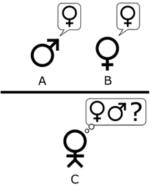

Turing's original game described a simple party game involving three players. Player A is a man, player B is a woman and player C (who plays the role of the interrogator) is of either sex. In the Imitation Game, player C is unable to see either player A or player B, and can communicate with them only through written notes. By asking questions of player A and player B, player C tries to determine which of the two is the man and which is the woman. Player A's role is to trick the interrogator into making the wrong decision, while player B attempts to assist the interrogator in making the right one.
